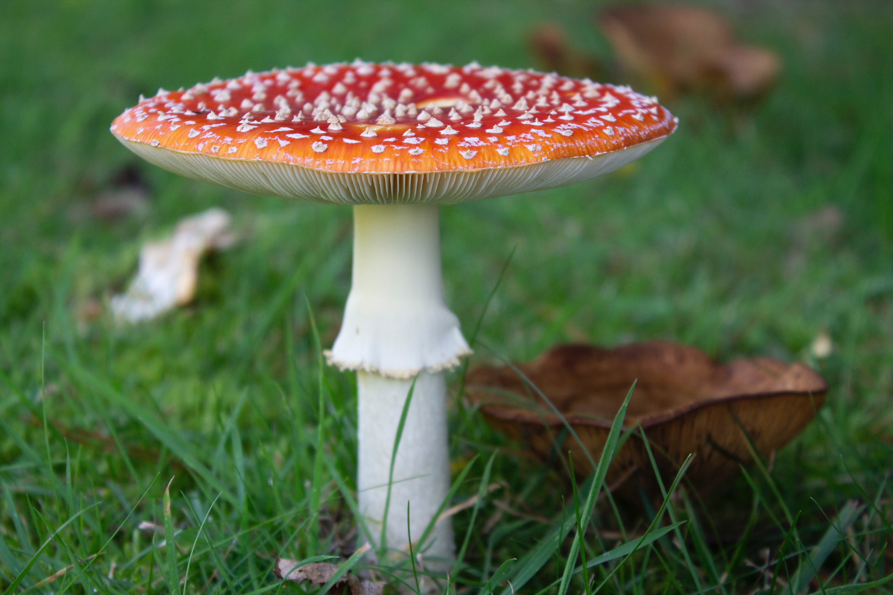

About Us
Disclaimer! This website was created by a student intended for use in a project as part of a college module. I do not own the copyright to any of the visual media used but all photos are licensed to be used, shared or modified for non commercial purposes. The use of copyrighted material under this license agreemnet does not constitute endorsement by the copyright holder of viewpoints stated on this website.
Welcome to Fungi Foraging Ireland, where we teach you the rewards and risks of wild mushroom picking. This once niche hobby has experienced a surge of new enthusiasts tired of spending the whole day behind the desk and seeking to reconnect with the natural world. The field may seem daunting to beginners as misjudging an edible species for a poisonous variety might be your last mistake to put it bluntly, however it's the aim of this website to show anyone the necessary information to have a hazard free and exciting foraging experience. We provide information on identification, mushroom anatomy, poisonous species to watch out for, delicious recipes to make the most out of your haul and much more. If you've got a specific uestion you'd like us to address write to us using the contact form and maybe we'll post it in the FAQ's.